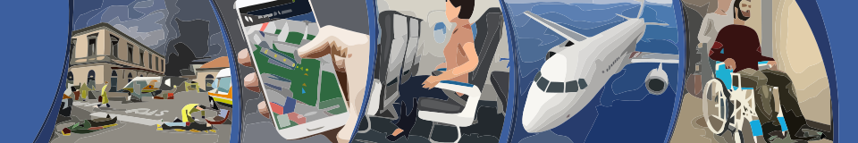

Articoli giornali
-
Il Corriere parla del nostro progetto sulla sicurezza dei passeggeri nelle pagine di Scienze
TIME, il prestigioso settimanale con il maggior numero di lettori al mondo, ha dedicato oggi un articolo all'esperimento in Realtà Virtuale svoltosi presso il nostro laboratorio in collaborazione con SISSA Social Neuroscience Lab. -
TIME dedica un articolo ad un esperimento di Realtà Virtuale svolto in HCI Lab
L'uso dei videogiochi per scopi seri di motivazione ed addestramento e' il tema a cui la rivista Focus, nel numero 221 di Marzo, ha dedicato un ampio servizio, parlando delle ricerche svolte dal nostro laboratorio sia nel settore delle emergenze che di quello dell'esercizio fisico. -
Il mensile di salute Starbene intervista il direttore del nostro laboratorio
Quali strategie dobbiamo seguire per usare la rete in modo efficace e sano? Queste alcune delle domande rivolte a Luca Chittaro dalla popolare rivista del gruppo Mondadori, nel numero di Aprile 2010. -
Anche Societe', mensile sul lusso, parla del progetto di Mobile Personal Trainer del nostro laboratorio
L'acronimo Evita sta per "Embodied Virtual Trainer", un'allenatrice tascabile in grado suggerire percorso e ritmo migliore, di monitorare il reale andamento dell'attivita' fisica, il grado di affaticamento e la concentrazione di ossigeno nel sangue. -
 Il laboratorio di Interazione Uomo-Macchina segnalato dal Sole 24 ore fra i cinque centri di eccellenza per il rapporto con le imprese
Il laboratorio di Interazione Uomo-Macchina segnalato dal Sole 24 ore fra i cinque centri di eccellenza per il rapporto con le imprese
Imprese-atenei, le sinergie che funzionano. I centri di eccellenza si stanno aprendo sempre piu' al dialogo con le aziende, a costi contenuti. -
Il mensile tecnologico Jack parla del nostro progetto di Mobile Personal Trainer
Training col Palmare. Il personal trainer? Lo metterai in tasca. Un team di ricercatori dell'Universita' di Udine ha sviluppato il prototipo Mopet, presentato all'ultima edizione della fiera Virtuality a Torino. -
Il nostro laboratorio realizza il Virtual Reality Theatre del centro di ricerca CirMont
I laboratori di ricerca CirMont inaugurati dal presidente Illy. Il Virtual Reality Theatre (VRT) integra alla proiezione 3D un insieme di sensori che rilevano il movimento umano, permettendo agli spettatori di interagire con le visualizzazioni stereoscopiche mediante tecniche gestuali intuitive. -
Il progetto Mopet del nostro laboratorio sulla rubrica tecnologica di Vanity Fair
Con il personal trainer in tasca. Percorsi ed esercizi da fare, valutazione dei progressi. -
La ricostruzione virtuale del sisma del friuli realizzata dall'HCI Lab su Repubblica
Trent'anni dopo il Friuli trema ancora ma questa volta è solo sul computer.
{kind=link}
{kind=link}
{kind=link}
{kind=link}
{kind=link}
{kind=link}